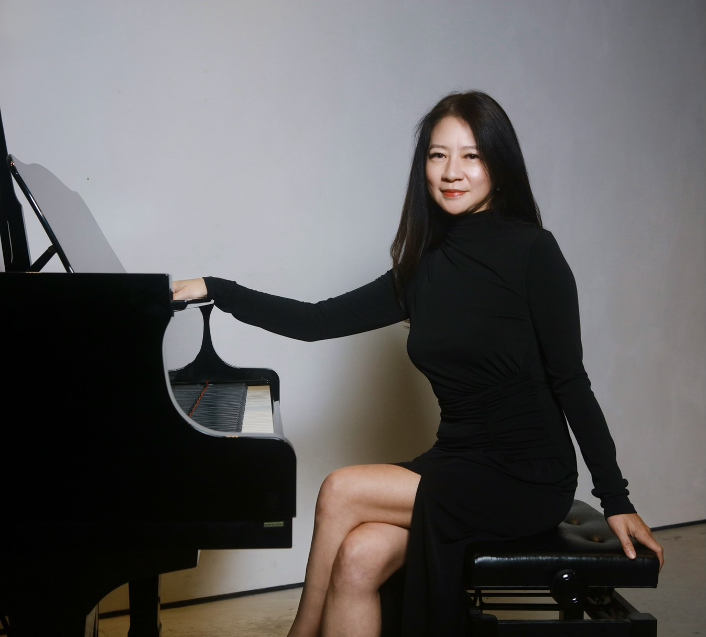

楊于萱 / 鋼琴演奏家
擁有25年的國際表演與執教經驗。她不僅是優秀的演奏家，更是具豐富經驗的伴奏家，合唱團指揮，常與世界各地音樂家同台演出並受台灣、芝加哥及歐洲各地邀請巡演。在專業領域永遠追求完美及更為精進的成績。
近十年來，除了音樂專業，楊于萱 在商業公關領域展現天份，在芝加哥僑界社團活動為重要核心人物，擔任社團代表主持各式活動表現優異。尤在2017 成功簽署伊州衞斯蒙市與台灣新竹縣姊妹市盟約，衞斯蒙市命楊于萱為友誼大使。她亦持續在經濟，文化及教育方面積極推動二地之交流。楊于萱 未來將為國際間的經貿交流、政府之間的友誼建立竭盡全力，成為國際級公關而努力。
畢業於 美國波士頓音樂學院 鋼琴演奏碩士
伊州日內瓦音樂大賽終身評審 ． 伊州莫倫教育大學音樂系教授/專業伴奏
芝加哥台美合唱團指揮 / 芝加哥福爾摩沙女聲合唱團指揮
班尼狄頓天主教大學音樂系教授/伴奏 ． 芝加哥台灣學校校長/理事長
北美洲台灣商會聯合總會諮詢委員 ． 世界台灣商會聯合總會顧問 ． 芝加哥台美商會會長
億萊國際商業顧問公司CEO